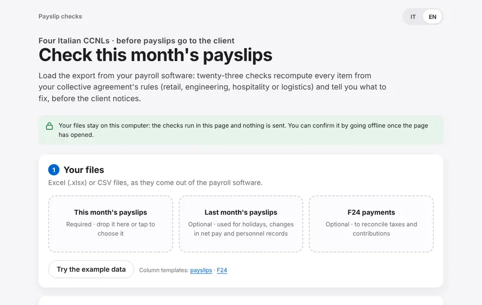

Catching payroll errors before the client does
Client: An Italian payroll provider sending payslips for six clients and 182 employees under four collective agreements (retail and services, engineering industry, bars and restaurants, logistics), with errors planted on purpose.
Which payslips are wrong before they go out, which errors would a misconfigured payroll engine make that the checks cannot see, and do the same payslips feed the pay-gap report correctly?

What I did
- Wrote twenty-three checks that recompute each item from the client's agreement, INPS and the 2026 tax law, not from the payroll software: minimums, INPS rates, sick pay, income tax, TFR, notice and pay in lieu of it.
- Ran a whole year, January to December 2026, then nine payroll engines configured wrong, each recomputed downstream so every total still adds up, and measured which checks catch each one and when.
- Mapped every payslip item to what the EU Pay Transparency Directive counts as pay and turned the year into the pay-transparency kit's extract; the kit's own code gets the same gaps.
- Delivered the checks three ways that agree: Python, a live-formula sheet for Google Sheets and a browser tool in English and Italian; every dated source carries its expiry.
What it found
- A rule set wrong (last year's tax bands, a June pay rise not loaded, 13 monthly payments instead of 14) is caught at once: the checks recompute the rule and do not trust the software.
- A grade wrong from the hiring date passes every check for twelve months, €1,877.98 net overpaid; a part-time entered without a letter is flagged once, in the month it changes, and then becomes the base.
- Ten employees below their agreement's minimum, €212.40 of withholding tax missing from one F24, and two leavers' pay in lieu of notice wrong: accruals left out, or a resignation charged at the dismissal rate.
With real data
- A pilot on one client's real payslips, run in the browser so the files never leave the office.
- A yearly sample of personnel records against hiring letters: the one blind spot arithmetic cannot close.
- Blue-collar staff and drivers, whose sick pay base and notice follow other rules.
How it is checked. The sheet checked against Python on 1,789 values and recalculated by LibreOffice in CI; the browser tool on 3,991 values; the pay-transparency kit re-runs the Article 9 gaps on the extract in CI; ISTAT's index series and the INPS 2026 band read at source on 25 November 2026.
Synthetic or public data; not legal, pay or investment advice. Figures as published on 25 November 2026. Domenico Perroni · HR advisory, people analytics, reward · Kraków · d0m3n1c0x.github.io